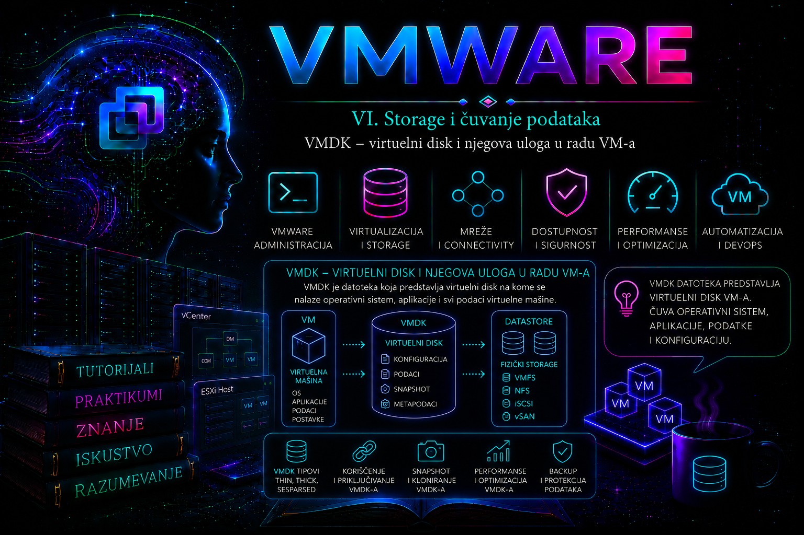

VMware

VMDK, odnosno Virtual Machine Disk, predstavlja virtuelni disk koji VMware ESXi prikazuje operativnom sistemu virtuelne mašine kao da je reč o fizičkom HDD, SSD ili NVMe uređaju. Gostujući operativni sistem na tom disku kreira particije, filesystem-e, boot zapise, direktorijume, aplikacije i podatke, dok ESXi te operacije prevodi u čitanje i upis blokova na datastore-u.
Iz perspektive Windows ili Linux operativnog sistema, VMDK izgleda kao standardni disk priključen na virtuelni storage kontroler. Iz perspektive VMware administratora, VMDK je skup međusobno povezanih metapodataka, podatkovnih blokova, snapshot veza, storage politika i konfiguracionih referenci.
Razumevanje VMDK-a neophodno je za:
- kreiranje i proširivanje virtuelnih diskova;
- planiranje datastore kapaciteta;
- rad sa thin i thick provisioning modelima;
- kreiranje i konsolidaciju snapshot-a;
- Storage vMotion i migraciju diskova;
- backup i restore virtuelnih mašina;
- analizu zaključanih, oštećenih ili izgubljenih diskova;
- odvajanje sistemskih, aplikacionih i podatkovnih diskova;
- optimizaciju storage performansi.
VMDK nije samo jedna obična datoteka koju administrator može proizvoljno da kopira, preimenuje ili obriše. U zavisnosti od tipa datastore-a, provisioning formata i postojanja snapshot-a, jedan virtuelni disk može obuhvatati više povezanih datoteka ili storage objekata.
Životni ciklus VMDK-a počinje zahtevom za kapacitetom i izborom kontrolera, datastore-a, storage politike, provisioning formata i disk režima. Nastavlja se inicijalizacijom u gostu, redovnim rastom, snapshot i backup operacijama, migracijama, promenama kapaciteta i performansnim praćenjem, a završava se kontrolisanim odvajanjem, zadržavanjem ili brisanjem. Svaka faza menja skup dokaza koje administrator mora proveriti: VM konfiguraciju, aktivni disk lanac, zauzeće storage-a, zaštitu podataka i mapiranje do guest volumena.
Ova lekcija zato VMDK posmatra kao upravljani podatkovni objekat, a ne samo kao ekstenziju datoteke. Lekcija 26 dala je kontekst datastore-a; naredna lekcija detaljno razdvaja thin i thick alokaciju, dok se ovde provisioning obrađuje samo koliko je potrebno za bezbedan životni ciklus diska.
Kako virtuelna mašina vidi VMDK
Kada se virtuelni disk doda virtuelnoj mašini, on se priključuje na virtuelni kontroler, na primer:
- LSI Logic SAS;
- VMware Paravirtual SCSI – PVSCSI;
- SATA kontroler;
- virtuelni NVMe kontroler;
- IDE kontroler u starijim konfiguracijama.
Disk zatim dobija adresu koja se sastoji od broja kontrolera i broja uređaja.
SCSI (0:0) – prvi disk na prvom SCSI kontroleru
SCSI (0:1) – drugi disk na prvom SCSI kontroleru
SCSI (1:0) – prvi disk na drugom SCSI kontroleru
NVMe (0:0) – prvi disk na prvom NVMe kontroleruOperativni sistem gosta ne poznaje naziv datastore-a niti direktno radi sa VMDK datotekom. On šalje I/O zahteve virtuelnom kontroleru, dok ESXi upravlja njihovim prosleđivanjem storage sloju.
Aplikacija u virtuelnoj mašini
│
▼
Filesystem gosta
│
▼
Virtuelni disk operativnog sistema
│
▼
Virtuelni SCSI, SATA ili NVMe kontroler
│
▼
VMDK
│
▼
VMFS, NFS, vSAN ili vVol datastore
│
▼
Fizički storage uređajiVMDK descriptor i podatkovna datoteka
Kod klasičnog VMFS datastore-a bazni virtuelni disk se često sastoji od najmanje dve povezane datoteke:
APP-SRV01.vmdk
APP-SRV01-flat.vmdkDatoteka:
APP-SRV01.vmdkpredstavlja mali tekstualni descriptor. Ona sadrži metapodatke o virtuelnom disku, uključujući njegov kapacitet, tip, podatkovnu datoteku, adapter i identifikatore koji se koriste za održavanje integriteta disk i snapshot lanca.
Datoteka:
APP-SRV01-flat.vmdksadrži stvarne blokove podataka baznog virtuelnog diska.
Datastore Browser često prikazuje ove komponente kao jedan logički objekat, zbog čega administrator ne treba da zaključuje da podatkovna datoteka ne postoji samo zato što je ne vidi odvojeno u grafičkom interfejsu.
Kroz ESXi Shell mogu se videti fizičke datoteke:
cd /vmfs/volumes/PROD-VMFS01/APP-SRV01
ls -lahPrimer:
-rw------- 1 root root 549 Jul 21 10:15 APP-SRV01.vmdk
-rw------- 1 root root 80G Jul 21 10:15 APP-SRV01-flat.vmdk
-rw------- 1 root root 3.2K Jul 21 10:15 APP-SRV01.vmx
-rw------- 1 root root 8.5K Jul 21 10:20 vmware.log
Prikazana dužina -flat.vmdk datoteke predstavlja logički kapacitet virtuelnog diska. Kod thin provisioned diska stvarno alocirani blokovi na datastore-u mogu zauzimati manje fizičkog prostora; zato se logička veličina iz ls -l ne sme tumačiti kao stvarna potrošnja. Za dokaz potrošnje koriste se vSphere prikaz, datastore metrike i, kada je primenljivo, du, uz razumevanje sparse ponašanja storage sloja.
Primer sadržaja VMDK descriptor-a
Descriptor se može pregledati komandom:
cat APP-SRV01.vmdkPojednostavljeni primer:
# Disk DescriptorFile
version=1
encoding="UTF-8"
CID=4ac3812f
parentCID=ffffffff
createType="vmfs"
RW 167772160 VMFS "APP-SRV01-flat.vmdk"
ddb.adapterType = "lsilogic"
ddb.geometry.cylinders = "10443"
ddb.geometry.heads = "255"
ddb.geometry.sectors = "63"
ddb.virtualHWVersion = "21"Važni elementi su:
- CID – identifikator trenutnog sadržaja diska;
- parentCID – identifikator roditeljskog diska; kod baznog diska obično je
ffffffff; - createType – format virtuelnog diska;
- RW – broj sektora i naziv povezane podatkovne datoteke;
- ddb.adapterType – tip adaptera za koji je descriptor kreiran;
- ddb.virtualHWVersion – povezana verzija virtuelnog hardvera.
Descriptor se u redovnom radu ne menja ručno. Ručna izmena je napredna recovery procedura koja zahteva tačno poznavanje kapaciteta, tipa diska, snapshot lanca i CID odnosa. Pogrešna vrednost može učiniti disk ili čitavu snapshot hijerarhiju neupotrebljivom.
Vrednost iza RW izražena je u sektorima od 512 bajtova, pa se kapacitet ne prepisuje napamet. Primer 167772160 × 512 daje 80 GiB. Geometrijska polja su pre svega kompatibilnosni metapodaci i nisu pouzdan izvor za zaključivanje o fizičkoj geometriji savremenog storage-a.
VMDK i VMX konfiguracija
Virtuelna mašina ne pronalazi disk samo zato što se on nalazi u istom direktorijumu. VMX konfiguracioni fajl sadrži referencu na odgovarajući VMDK descriptor.
Primer:
scsi0:0.present = "TRUE"
scsi0:0.fileName = "APP-SRV01.vmdk"
scsi0:0.deviceType = "scsi-hardDisk"
scsi0:1.present = "TRUE"
scsi0:1.fileName = "APP-SRV01-DATA01.vmdk"
scsi0:1.deviceType = "scsi-hardDisk"Reference na diskove mogu se pregledati komandom:
grep -Ei 'scsi[0-9]+:[0-9]+\.fileName|sata[0-9]+:[0-9]+\.fileName|nvme[0-9]+:[0-9]+\.fileName' \
APP-SRV01.vmxAko VMX referencira nepostojeći descriptor ili pogrešnu putanju, virtuelna mašina neće moći da otvori disk.
Bazni disk i snapshot diskovi
Kada virtuelna mašina nema snapshot, aktivni disk najčešće pokazuje direktno na bazni VMDK. Kreiranjem snapshot-a bazni disk se zadržava kao roditelj, a novi upisi preusmeravaju se u child, odnosno delta disk.
APP-SRV01.vmdk
│
▼
APP-SRV01-000001.vmdk
│
▼
APP-SRV01-000002.vmdkSvaki snapshot disk ima descriptor i podatkovnu komponentu. U zavisnosti od formata i veličine diska, podatkovna datoteka može imati naziv:
APP-SRV01-000001-delta.vmdkili:
APP-SRV01-000001-sesparse.vmdkAktivno stanje VM-a predstavlja kombinaciju baznog diska i svih promena zapisanih u lancu do najnovijeg child diska.
Zbog toga se snapshot datoteke ne smeju ručno brisati. Brisanje jedne karike može prekinuti lanac i onemogućiti pristup novijim podacima.
CID i parentCID veza
Snapshot descriptor sadrži:
- sopstveni
CID; parentCIDkoji mora odgovarati CID vrednosti njegovog neposrednog roditelja;parentFileNameHintkoji upućuje na roditeljski descriptor.
Pojednostavljeni primer snapshot descriptor-a:
CID=8f9184a2
parentCID=4ac3812f
createType="vmfsSparse"
parentFileNameHint="APP-SRV01.vmdk"
Ako parentCID child diska ne odgovara CID vrednosti roditelja, ESXi može prijaviti:
The parent virtual disk has been modified since the child was created.Takav problem se ne rešava nasumičnim menjanjem CID vrednosti. Prvo se utvrđuje ispravan redosled snapshot lanca, prave rezervne kopije descriptor datoteka i proverava da li je neki disk kloniran, menjan ili zamenjen.
VMDK provisioning formati
Na VMFS datastore-u najčešće se koriste:
- Thin Provision – prostor se zauzima postepeno, kako gost upisuje nove blokove;
- Thick Provision Lazy Zeroed – puni kapacitet rezerviše se odmah, dok se blokovi nuliraju pri prvom upisu;
- Thick Provision Eager Zeroed – puni kapacitet se rezerviše i blokovi se unapred nuliraju.
Provisioning format utiče na zauzeće datastore-a, vreme kreiranja, operativne karakteristike i mogućnost korišćenja određenih funkcionalnosti. Detaljna razlika između thin i thick modela obrađuje se u sledećoj lekciji.
Persistent i Independent disk režimi
Pored provisioning formata, virtuelni disk može imati i različit disk mode.
Dependent
Standardni režim. Disk učestvuje u snapshot operacijama virtuelne mašine.
Independent Persistent
Promene se trajno zapisuju, ali disk ne učestvuje u snapshot-u virtuelne mašine. Koristi se samo kada postoji jasno opravdan dizajn i administrator razume posledice za backup i recovery.
Independent Nonpersistent
Promene se tokom rada privremeno zapisuju, ali se odbacuju kada se virtuelna mašina isključi. Nije namenjen čuvanju trajnih produkcionih podataka. Bezbednosno je posebno problematičan jer gašenje može ukloniti i tragove aktivnosti napadača, pa zvanične hardening smernice preporučuju izbegavanje ovog režima osim u strogo kontrolisanim, namenskim laboratorijskim scenarijima.
Independent disk može biti izostavljen iz VM snapshot-a i iz određenih backup postupaka koji se oslanjaju na snapshot mehanizam. Njegova upotreba mora biti dokumentovana.
Virtuelni disk i storage kontroler
Izbor kontrolera utiče na kompatibilnost, broj podržanih diskova, performanse i potrebne drajvere u gostujućem operativnom sistemu.
LSI Logic SAS
Široko kompatibilan kontroler koji se često koristi za sistemske diskove Windows i Linux virtuelnih mašina.
VMware Paravirtual SCSI
PVSCSI je optimizovan za velika I/O opterećenja i može smanjiti CPU overhead u odnosu na tradicionalne emulirane kontrolere. Gostujući operativni sistem mora imati odgovarajući drajver.
Kod baza podataka i intenzivnih aplikacija diskovi se mogu rasporediti na više PVSCSI kontrolera kako bi se povećala paralelnost i izbeglo oslanjanje na jedan virtuelni red zahteva.
Virtuelni NVMe
Virtuelni NVMe kontroler pogodan je za savremene gostujuće sisteme koji podržavaju NVMe drajvere. Njegova upotreba treba da bude usklađena sa verzijom virtuelnog hardvera, operativnim sistemom gosta i zahtevima aplikacije.
Sistemski i podatkovni diskovi
Produkcione virtuelne mašine često koriste više VMDK diskova:
SCSI 0:0 – operativni sistem
SCSI 0:1 – aplikacije
SCSI 0:2 – podaci
SCSI 1:0 – transakcioni logovi
SCSI 1:1 – privremeni ili radni podaciOdvajanje diskova omogućava:
- različito upravljanje kapacitetom;
- jednostavnije proširenje pojedinačnih volumena;
- primenu različitih storage politika;
- raspoređivanje diskova na različite datastore-e;
- bolju organizaciju backup i restore procesa;
- odvajanje različitih I/O obrazaca;
- lakšu identifikaciju podataka tokom incidenta.
Samo kreiranje više VMDK diskova na istom datastore-u ne garantuje fizičko odvajanje performansi. Ako svi diskovi koriste isti storage pool, iste kontrolere i iste fizičke uređaje, osnovno ograničenje može ostati zajedničko.
VMDK na različitim datastore tipovima
VMFS
Descriptor i podatkovna datoteka najčešće se vide kao odvojene datoteke kroz ESXi Shell.
NFS
Na NFS datastore-u način predstavljanja zavisi od disk formata i mogućnosti storage sistema. ESXi upravlja virtuelnim diskom kao VMDK objektom, dok stvarno zauzeće može zavisiti od NFS servera i njegovih funkcionalnosti.
vSAN
Na vSAN-u VMDK predstavlja distribuirani storage objekat kojim upravlja vSAN. Njegove komponente mogu biti raspoređene na više hostova u skladu sa storage politikom. Descriptor može sadržati vsan:// referencu, ali se objektni podaci ne smeju tretirati kao klasična lokalna -flat.vmdk datoteka. OSA i ESA mogu imati različite snapshot implementacije i servisne procedure; u incidentu se koristi procedura tačno za arhitekturu i izdanje klastera.
vVol
Na vVol datastore-u virtuelni disk se mapira na data vVol kojim upravlja storage sistem preko VASA integracije. Tradicionalni prikaz velikog VMFS LUN-a zamenjen je granularnijim upravljanjem objektima pojedinačnih virtuelnih mašina. Datoteka ili descriptor koji se vidi kroz vSphere može biti referenca na vvol:// objekat, pa se VMFS recovery postupci ne prenose automatski na vVol.
RDM i VMDK
Raw Device Mapping, odnosno RDM, omogućava virtuelnoj mašini pristup SAN LUN-u preko male mapping VMDK datoteke. Mapping datoteka sadrži informacije potrebne da ESXi poveže virtuelni uređaj sa fizičkim LUN-om.
RDM se istorijski koristio za određene clustering, storage alatke i specifične aplikacione zahteve. Za nove implementacije treba proveriti da li je RDM zaista potreban ili standardni VMDK može da ispuni zahtev jednostavnije i uz bolju podršku VMware funkcionalnosti.
Pregled diskova kroz vSphere Client
Diskovi virtuelne mašine proveravaju se kroz:
Virtual Machine → Actions → Edit SettingsZa svaki disk treba proveriti:
- kapacitet;
- provisioning format;
- datastore ili storage policy;
- virtuelni device node;
- disk mode;
- sharing režim, ako se koristi;
- IOPS limit, ako je podešen;
- povezani kontroler;
- da li disk pripada snapshot lancu.
Pregled VMDK diskova kroz PowerCLI
Povezivanje sa vCenter Serverom:
Connect-VIServer -Server vcsa.lab.localPrikaz svih diskova jednog VM-a:
Get-VM -Name "APP-SRV01" |
Get-HardDiskDetaljan prikaz:
Get-VM -Name "APP-SRV01" |
Get-HardDisk |
Select-Object Parent,
Name,
CapacityGB,
StorageFormat,
Persistence,
FilenamePrikaz svih VM diskova u okruženju:
Get-VM |
Get-HardDisk |
Select-Object Parent,
Name,
CapacityGB,
StorageFormat,
Persistence,
Filename |
Sort-Object Parent, NameIzvoz u CSV:
Get-VM |
Get-HardDisk |
Select-Object Parent,
Name,
CapacityGB,
StorageFormat,
Persistence,
Filename |
Export-Csv "./vmdk-inventory.csv" -NoTypeInformationKreiranje novog diska kroz PowerCLI
Dodavanje thin provisioned diska od 100 GB:
$vm = Get-VM -Name "APP-SRV01"
New-HardDisk -VM $vm `
-CapacityGB 100 `
-StorageFormat ThinKreiranje diska na određenom datastore-u:
$vm = Get-VM -Name "APP-SRV01"
$datastore = Get-Datastore -Name "PROD-VMFS02"
New-HardDisk -VM $vm `
-CapacityGB 200 `
-Datastore $datastore `
-StorageFormat ThinU produkciji pre dodavanja diska treba proveriti slobodan prostor, storage politiku, backup obuhvat, naming standard, aplikacioni zahtev i plan proširenja filesystem-a u gostujućem sistemu.
Proširivanje postojećeg VMDK-a
Virtuelni disk može se proširiti kroz vSphere Client, PowerCLI ili u određenim servisnim situacijama kroz vmkfstools.
PowerCLI primer:
$disk = Get-VM -Name "APP-SRV01" |
Get-HardDisk |
Where-Object { $_.Name -eq "Hard disk 2" }
Set-HardDisk -HardDisk $disk `
-CapacityGB 300 `
-Confirm:$falseProširenje VMDK-a ne proširuje automatski particiju i filesystem unutar operativnog sistema gosta. Posle VMware izmene potrebno je proširenje izvršiti i u gostu.
Na Linux sistemu početna provera može uključivati:
lsblk
sudo fdisk -l
df -h
sudo pvs
sudo vgs
sudo lvsNa Windows sistemu koristi se Disk Management ili PowerShell:
Get-Disk
Get-Partition
Get-VolumeProširivanje mora uzeti u obzir tip particione tabele, raspored particija, LVM, filesystem i podršku operativnog sistema za online resize.
Važna pravila pri proširivanju
- VMDK se kroz standardne VMware operacije može povećati, ali se ne smanjuje jednostavnim unošenjem manje vrednosti.
- Pre promene treba proveriti backup i mogućnost oporavka.
- Treba proveriti slobodan prostor na datastore-u.
- Aktivni snapshot-i mogu blokirati ili komplikovati operaciju.
- Ne treba proširivati bazni disk ručno dok postoji snapshot lanac.
- Posle proširenja treba proširiti particiju, LVM ili filesystem u gostu.
- Promenu treba dokumentovati u CMDB-u ili evidenciji infrastrukture.
Upravljanje VMDK-om pomoću vmkfstools
Komanda vmkfstools predstavlja jedan od najvažnijih ESXi alata za pregled i servisiranje VMFS filesystem-a i virtuelnih diskova.
Izvršava se u ESXi Shell-u ili SSH sesiji sa administrativnim ovlašćenjima. Komande --help, -q, -x check i -D prvenstveno čitaju stanje; -c, -i i -X kreiraju ili menjaju podatke i zahtevaju change kontrolu, potvrđenu putanju i dovoljan odredišni kapacitet. Podržane opcije mogu se razlikovati između ESXi izdanja, zato je lokalni vmkfstools --help autoritativna početna provera za konkretan host.
Pomoć:
vmkfstools --helpPregled disk lanca:
vmkfstools -q APP-SRV01.vmdkDetaljniji pregled lanca:
vmkfstools -q -v10 APP-SRV01.vmdkProvera integriteta virtuelnog diska:
vmkfstools -x check APP-SRV01.vmdk
Ova provera ne popravlja disk i ne potvrđuje aplikacionu konzistentnost podataka. Pokreće se nad descriptor-om, a rezultat se koreliše sa aktivnom VMX referencom i vmware.log. Na zauzetom produkcionom disku prvo se potvrđuje podržan operativni postupak i izbegava svaka varijanta koja bi menjala stanje.
Provera da li je disk zaključan:
vmkfstools -D APP-SRV01-flat.vmdkKloniranje virtuelnog diska:
vmkfstools -i \
/vmfs/volumes/PROD-VMFS01/APP-SRV01/APP-SRV01.vmdk \
/vmfs/volumes/RECOVERY-VMFS01/APP-SRV01-RECOVERED.vmdk \
-d thinKreiranje novog thin VMDK-a od 20 GB:
vmkfstools -c 20G -d thin LAB-DISK01.vmdkKreiranje eager-zeroed thick diska:
vmkfstools -c 20G -d eagerzeroedthick LAB-DISK02.vmdkProširivanje diska:
vmkfstools -X 120G APP-SRV01-DATA01.vmdk
Direktne vmkfstools promene nad produkcionim diskovima izvode se samo kada je postupak opravdan, dokumentovan i usklađen sa stanjem VM-a i snapshot lanca. Uobičajene izmene treba raditi kroz vCenter Server ili PowerCLI.
Komanda vmkfstools -X povećava logički kapacitet; ne smanjuje disk i ne proširuje guest particiju ili filesystem. Ne izvršava se nad roditeljskim diskom dok postoji snapshot lanac. Za rollback nakon pogrešno dodatog kapaciteta ne postoji simetrična operacija „umanji VMDK”; bezbedan povratak obično znači migraciju podataka na novi disk odgovarajuće veličine ili restore prema odobrenom planu.
Zaključavanje VMDK datoteka
ESXi zaključava aktivne VM datoteke kako bi sprečio istovremeni neispravan upis sa više hostova. Ako je disk zaključan sa neočekivanog hosta ili procesa, VM može prijaviti:
Failed to lock the file
Cannot open the disk
Unable to access file since it is lockedPočetna provera:
vmkfstools -D APP-SRV01-flat.vmdkZa VMFS datastore može se koristiti i:
vmfsfilelockinfo -p APP-SRV01-flat.vmdkTreba utvrditi:
- da li VM već radi na drugom hostu;
- da li je ostao aktivan backup proxy ili hot-add disk;
- da li je prethodni host pao bez urednog oslobađanja zaključavanja;
- da li je VM dvostruko registrovan;
- da li postoji aktivna snapshot, clone ili migration operacija.
ESXi host ne treba restartovati samo zato što je pronađen lock. Prvo treba identifikovati vlasnika i proveriti da li taj host ili proces legitimno koristi disk.
Forsirano razbijanje VMFS/LVM zaključavanja nije rutinski VMDK postupak i ne izvodi se samo na osnovu poruke „locked”. Pogrešno uklanjanje legitimnog zaključavanja može omogućiti konkurentne upise i korupciju. Takva intervencija zahteva potvrdu da nijedan host ne koristi objekat, tačnu Broadcom proceduru za konkretan tip zaključavanja i, kada postoji sumnja, uključivanje podrške.
Dokazi, događaji i logovi za VMDK incidente
Pre prve promene beleže se UTC ili lokalno vreme simptoma, VM, ESXi host, datastore, aktivni zadatak i tačna VMDK putanja. Najvažniji VM-specifičan izvor je vmware.log u home direktorijumu virtuelne mašine; stvara ga VMX proces i u njemu se traže obrasci DISKLIB, Content ID mismatch, Cannot open the disk, Failed to lock i consolidat. Rotirani vmware-*.log fajlovi čuvaju raniji kontekst.
cd /vmfs/volumes/PROD-VMFS01/APP-SRV01
grep -Ei 'DISKLIB|Content ID|Cannot open|Failed to lock|consolidat' vmware*.log
Na ESXi hostu se zatim korelišu /var/run/log/hostd.log za lokalne VM operacije, /var/run/log/vmkernel.log za VMkernel/storage putanju i /var/run/log/vobd.log za sistemske opservacije i događaje. U vCenter okruženju zadaci i događaji potvrđuju ko je i kada pokrenuo reconfiguration, snapshot, consolidate, clone ili migration. Pretraga mora obuhvatiti nekoliko minuta pre i posle simptoma i sve hostove između kojih se VM kretala.
grep -Ei 'APP-SRV01|DISKLIB|lock|snapshot|consolidat' /var/run/log/hostd.log
grep -Ei 'naa\.|I/O|APD|PDL|NMP|HPP' /var/run/log/vmkernel.log
Log nalaz nije samostalan dokaz osnovnog uzroka. Na primer, Cannot open the disk opisuje posledicu; tek VMX referenca, postojanje datoteke ili objekta, chain provera, lock vlasnik, datastore stanje i istorija zadataka razdvajaju nedostajući descriptor, prekinut lanac, legitimni lock i nedostupan storage.
Brisanje VMDK-a
Uklanjanje diska iz VM konfiguracije i trajno brisanje podatkovne datoteke nisu ista operacija.
vSphere Client može ponuditi mogućnosti:
- ukloniti disk iz virtuelne mašine, ali zadržati VMDK na datastore-u;
- ukloniti disk i trajno obrisati njegove datoteke.
PowerCLI prikaz diska:
$disk = Get-VM -Name "APP-SRV01" |
Get-HardDisk |
Where-Object { $_.Name -eq "Hard disk 3" }
$disk |
Select-Object Parent,
Name,
CapacityGB,
FilenameUklanjanje iz konfiguracije bez trajnog brisanja:
Remove-HardDisk -HardDisk $disk -Confirm:$falseTrajno brisanje:
Remove-HardDisk -HardDisk $disk `
-DeletePermanently `
-Confirm:$false
Opcija DeletePermanently je destruktivna. Pre njenog korišćenja obavezno treba proveriti:
- tačno ime VM-a;
- tačan broj i kapacitet diska;
- VMDK putanju;
- device node;
- da li disk koristi druga VM;
- da li postoje potrebni podaci;
- da li je backup provereno upotrebljiv;
- da li je odobren change zahtev.
Pronalaženje orphaned VMDK diskova
Orphaned VMDK je disk koji postoji na datastore-u, ali nije povezan ni sa jednom očekivanom virtuelnom mašinom. Može nastati nakon:
- neuspelog kloniranja;
- neuspele migracije;
- uklanjanja diska iz VM konfiguracije bez brisanja;
- ručne administrativne intervencije;
- restore ili test postupka;
- nepotpunog brisanja virtuelne mašine.
Samo odsustvo VMDK-a iz aktivnog VMX fajla nije dovoljan dokaz da je disk nepotreban. Disk može biti:
- odvojen radi kasnijeg ponovnog povezivanja;
- deo backup ili recovery postupka;
- povezan sa drugom virtuelnom mašinom;
- deo snapshot lanca;
- čuvan zbog pravnih ili operativnih razloga.
Pre brisanja potrebno je pronaći vlasnika, proveriti istoriju zadataka, backup evidenciju, datum poslednje izmene i eventualne reference.
VMDK i backup
Većina image-level backup rešenja koristi VMware API-je i privremeni snapshot kako bi konzistentno čitala VMDK. Backup može koristiti različite transportne režime, ali je osnovni objekat zaštite virtuelni disk i njegova konfiguracija.
Administrator treba da zna:
- koji VMDK diskovi ulaze u backup;
- da li postoje independent diskovi koji su izostavljeni;
- da li su veliki podatkovni diskovi pokriveni politikom;
- koliko traje snapshot tokom backup-a;
- da li snapshot ostaje posle neuspelog posla;
- da li je restore VMDK-a testiran;
- da li backup omogućava vraćanje samo jednog diska.
Postojanje backup posla sa statusom „Success” nije dovoljno bez periodičnog testiranja restore-a.
VMDK i Storage vMotion
Storage vMotion može premestiti sve VM datoteke ili pojedinačne diskove na drugi datastore, u zavisnosti od izabrane konfiguracije. Tokom migracije moguće je promeniti i provisioning format, na primer thick disk pretvoriti u thin ili obrnuto, ako odredišni storage i odabrana operacija to podržavaju.
Pre migracije treba proveriti:
- slobodan prostor na odredištu;
- storage policy kompatibilnost;
- aktivne snapshot-e;
- trenutno I/O opterećenje;
- backup i druge migracione poslove;
- tip datastore-a;
- očekivano vreme i uticaj operacije.
VMDK performanse
Performanse virtuelnog diska zavise od više slojeva:
- aplikacionog obrasca čitanja i upisa;
- filesystem-a gosta;
- broja i tipa virtuelnih kontrolera;
- queue depth vrednosti;
- provisioning formata;
- postojanja snapshot-a;
- latencije datastore-a;
- storage putanja i multipathing politike;
- performansi fizičkog storage sistema;
- konkurentnog opterećenja drugih VM-ova.
Visoka latencija jednog VMDK-a ne znači automatski da je sama VMDK datoteka oštećena. Najčešće je potrebno analizirati čitav I/O put od aplikacije do fizičkog storage uređaja.
Monitoring VMDK performansi
U vSphere Client-u mogu se pratiti VM disk metrike kroz:
Virtual Machine → Monitor → Performance → AdvancedVažne metrike uključuju:
- read latency;
- write latency;
- read IOPS;
- write IOPS;
- read throughput;
- write throughput;
- outstanding I/O zahteve;
- disk usage i maksimalnu latenciju.
Za analizu na ESXi hostu koristi se:
esxtopTaster:
vprikazuje virtuelne diskove, dok:
uprikazuje storage uređaje. Analiza oba prikaza pomaže da se razlikuje problem jednog VMDK-a od problema zajedničkog datastore-a ili storage uređaja.
Praktikum 1 – Inventar VMDK diskova u VMware okruženju
Cilj
Napraviti pregled svih virtuelnih diskova, njihovog kapaciteta, provisioning formata, režima i datastore lokacije.
Preduslovi
- pristup vCenter Serveru;
- instaliran VCF PowerCLI;
- nalog sa read pristupom inventory-ju;
- najmanje nekoliko virtuelnih mašina.
Korak 1 – Povezivanje
Connect-VIServer -Server vcsa.lab.localKorak 2 – Pregled svih diskova
$disks = Get-VM |
Get-HardDisk |
Select-Object Parent,
Name,
CapacityGB,
StorageFormat,
Persistence,
Filename
$disks | Format-Table -AutoSizeKorak 3 – Pronalaženje velikih diskova
$disks |
Where-Object { $_.CapacityGB -ge 500 } |
Sort-Object CapacityGB -Descending |
Format-Table -AutoSizeKorak 4 – Pronalaženje independent diskova
$disks |
Where-Object {
$_.Persistence -match "Independent"
} |
Format-Table -AutoSizeKorak 5 – Izvoz dokumentacije
$disks |
Export-Csv "./vmdk-inventory.csv" -NoTypeInformationOčekivani rezultat
Dobijen je centralni izveštaj iz kojeg se vidi koji VM poseduje koji disk, koliko je disk velik, gde se nalazi i koji provisioning ili persistence režim koristi.
Administratorska analiza
Posebno evidentirati:
- diskove bez jasnog naming standarda;
- izuzetno velike VMDK diskove;
- independent diskove;
- diskove na neočekivanim datastore-ima;
- VM-ove čiji diskovi koriste više različitih datastore-a.
Praktikum 2 – Dodavanje novog podatkovnog VMDK diska
Cilj
Dodati novi disk virtuelnoj mašini, proveriti ga u VMware sloju i pripremiti za korišćenje u Linux gostu.
Preduslovi
- test virtuelna mašina;
- dovoljno slobodnog prostora na datastore-u;
- pristup gostujućem operativnom sistemu;
- aktuelan backup ili snapshot samo ako je deo kontrolisane laboratorijske procedure.
Korak 1 – Dodavanje kroz PowerCLI
$vm = Get-VM -Name "LAB-LINUX01"
$datastore = Get-Datastore -Name "LAB-VMFS01"
New-HardDisk -VM $vm `
-CapacityGB 20 `
-Datastore $datastore `
-StorageFormat ThinKorak 2 – VMware provera
Get-VM -Name "LAB-LINUX01" |
Get-HardDisk |
Select-Object Name,
CapacityGB,
StorageFormat,
FilenameKorak 3 – Detekcija diska u Linux gostu
lsblk
sudo fdisk -l
dmesg | tail -n 30Ako novi SCSI disk nije odmah prikazan, može se izvršiti kontrolisani SCSI rescan u gostu:
for host in /sys/class/scsi_host/host*; do
echo "- - -" | sudo tee "$host/scan"
doneZatim:
lsblkKorak 4 – Kreiranje particije i filesystem-a
Primer za disk /dev/sdb u laboratoriji:
sudo parted /dev/sdb --script mklabel gpt
sudo parted /dev/sdb --script mkpart primary xfs 0% 100%
sudo mkfs.xfs /dev/sdb1Korak 5 – Mount
sudo mkdir -p /data
sudo mount /dev/sdb1 /data
df -h /dataKorak 6 – Trajni mount
sudo blkid /dev/sdb1
UUID se zatim pažljivo unosi u /etc/fstab.
Očekivani rezultat
Novi VMDK je dodat VM-u, detektovan u operativnom sistemu gosta, formatiran i montiran kao poseban podatkovni filesystem.
Praktikum 3 – Online proširenje VMDK-a i Linux filesystem-a
Cilj
Povećati postojeći podatkovni VMDK i proširiti filesystem u Linux gostu bez gubitka postojećih podataka.
Bezbednosna provera
- potvrditi tačan VM i disk;
- proveriti backup;
- proveriti da disk nema snapshot ograničenje;
- proveriti slobodan datastore kapacitet;
- utvrditi da li gost koristi običnu particiju ili LVM.
Korak 1 – Identifikacija diska
Get-VM -Name "LAB-LINUX01" |
Get-HardDisk |
Select-Object Name,
CapacityGB,
FilenameKorak 2 – Proširenje sa 20 GB na 30 GB
$disk = Get-VM -Name "LAB-LINUX01" |
Get-HardDisk |
Where-Object { $_.Name -eq "Hard disk 2" }
Set-HardDisk -HardDisk $disk `
-CapacityGB 30 `
-Confirm:$falseKorak 3 – Rescan u gostu
echo 1 | sudo tee /sys/class/block/sdb/device/rescan
lsblkKorak 4 – Proširenje GPT particije
sudo growpart /dev/sdb 1Korak 5 – Proširenje XFS filesystem-a
sudo xfs_growfs /dataZa ext4 filesystem:
sudo resize2fs /dev/sdb1Korak 6 – Verifikacija
lsblk
df -h /dataOčekivani rezultat
VMware disk, particija i filesystem prikazuju novi kapacitet, a postojeći podaci ostaju dostupni.
Napomena za LVM
Kod LVM konfiguracije redosled može uključivati:
sudo pvresize /dev/sdb1
sudo vgs
sudo lvextend -r -l +100%FREE /dev/mapper/vg_data-lv_dataTačne komande zavise od stvarnog naziva volume group i logical volume objekata.
Praktikum 4 – Pregled strukture VMDK i VMX datoteka
Cilj
Povezati disk prikazan u vSphere Client-u sa VMX referencom, VMDK descriptor-om i podatkovnom datotekom.
Preduslovi
- test VM na VMFS datastore-u;
- SSH pristup ESXi hostu;
- vežba se izvodi samo čitanjem datoteka.
Korak 1 – Pronalaženje VM-a
vim-cmd vmsvc/getallvmsPrimer:
Vmid Name File
24 LAB-LINUX01 [LAB-VMFS01] LAB-LINUX01/LAB-LINUX01.vmxKorak 2 – Otvaranje foldera
cd /vmfs/volumes/LAB-VMFS01/LAB-LINUX01
ls -lahKorak 3 – VMX reference
grep -Ei 'scsi[0-9]+:[0-9]+\.fileName' LAB-LINUX01.vmxKorak 4 – Pregled descriptor-a
cat LAB-LINUX01.vmdkKorak 5 – Provera disk lanca
vmkfstools -q LAB-LINUX01.vmdkKorak 6 – Provera integriteta
Dok je disk u bezbednom stanju i u skladu sa laboratorijskom procedurom:
vmkfstools -x check LAB-LINUX01.vmdkOčekivani rezultat
Administrator razume vezu:
VMX konfiguracija
│
▼
VMDK descriptor
│
▼
-flat.vmdk podatkovna datotekaPraktikum 5 – Kloniranje VMDK-a pomoću vmkfstools
Cilj
Napraviti kontrolisanu kopiju ugašenog laboratorijskog virtuelnog diska i priključiti je recovery virtuelnoj mašini.
Preduslovi
- izvorni test VM je ugašen;
- nema aktivnih snapshot-a;
- odredišni datastore ima dovoljno prostora;
- kopira se descriptor putanja, a ne direktno
-flat.vmdkdatoteka.
Korak 1 – Provera izvornog diska
vmkfstools -q \
/vmfs/volumes/LAB-VMFS01/LAB-LINUX01/LAB-LINUX01-DATA01.vmdkKorak 2 – Kreiranje odredišnog direktorijuma
mkdir -p /vmfs/volumes/LAB-VMFS02/RECOVERY-DISKSKorak 3 – Kloniranje
vmkfstools -i \
/vmfs/volumes/LAB-VMFS01/LAB-LINUX01/LAB-LINUX01-DATA01.vmdk \
/vmfs/volumes/LAB-VMFS02/RECOVERY-DISKS/LAB-LINUX01-DATA01-CLONE.vmdk \
-d thinKorak 4 – Provera klona
vmkfstools -q \
/vmfs/volumes/LAB-VMFS02/RECOVERY-DISKS/LAB-LINUX01-DATA01-CLONE.vmdk
vmkfstools -x check \
/vmfs/volumes/LAB-VMFS02/RECOVERY-DISKS/LAB-LINUX01-DATA01-CLONE.vmdkKorak 5 – Povezivanje sa recovery VM-om
U vSphere Client-u:
- otvoriti Edit Settings recovery VM-a;
- izabrati Add New Device → Existing Hard Disk;
- pronaći klonirani descriptor;
- izabrati odgovarajući controller i device node;
- sačuvati konfiguraciju.
Korak 6 – Provera podataka
Recovery VM treba pokrenuti u kontrolisanom okruženju, a disk po potrebi mountovati read-only pre analize.
Očekivani rezultat
Kreirana je nezavisna kopija VMDK-a koja se može koristiti za recovery test bez menjanja izvornog diska.
Praktikum 6 – Snapshot lanac i kontrolisana konsolidacija
Cilj
Uočiti kako se menja VMDK struktura nakon kreiranja snapshot-a i pravilno ukloniti snapshot kroz vSphere mehanizam.
Preduslovi
- laboratorijski VM;
- dovoljno slobodnog prostora na datastore-u;
- nema paralelnog backup posla;
- snapshot se ne koristi kao dugoročni backup.
Korak 1 – Početno stanje
cd /vmfs/volumes/LAB-VMFS01/LAB-LINUX01
ls -lah *.vmdk
vmkfstools -q LAB-LINUX01.vmdkKorak 2 – Kreiranje snapshot-a
U vSphere Client-u izabrati:
Snapshots → Take SnapshotNaziv:
LAB-before-changeKorak 3 – Pregled novih datoteka
ls -lah *.vmdkMogu se pojaviti:
LAB-LINUX01-000001.vmdk
LAB-LINUX01-000001-delta.vmdkili SESPARSE ekvivalent.
Korak 4 – Provera aktivne VMX reference
grep -Ei 'scsi[0-9]+:[0-9]+\.fileName' LAB-LINUX01.vmxAktivna referenca sada može pokazivati na snapshot descriptor.
Korak 5 – Provera lanca
vmkfstools -q -v10 LAB-LINUX01-000001.vmdkKorak 6 – Uklanjanje kroz Snapshot Manager
Izabrati snapshot i koristiti Delete. Pratiti zadatak i datastore kapacitet. Ne brisati delta datoteke ručno.
Korak 7 – Završna provera
ls -lah *.vmdk
vmkfstools -q LAB-LINUX01.vmdkOčekivani rezultat
Snapshot promene su konsolidovane u roditeljski disk, a VMX ponovo referencira odgovarajući bazni disk.
Scenario iz prakse 1 – VMDK je proširen, ali operativni sistem i dalje vidi staru veličinu
Situacija
Administrator je povećao disk sa 100 GB na 150 GB. vSphere prikazuje novi kapacitet, ali aplikacija i dalje prijavljuje da nema prostora.
Uzrok
Proširen je samo virtuelni disk. Particija, physical volume, logical volume ili filesystem u gostujućem sistemu još nisu prošireni.
Linux provera
lsblk
df -h
sudo pvs
sudo vgs
sudo lvsWindows provera
Get-Disk
Get-Partition
Get-VolumeRešenje
- Izvršiti disk rescan u gostu.
- Proširiti particiju ili LVM physical volume.
- Proširiti logical volume ako se koristi.
- Proširiti filesystem.
- Proveriti novi kapacitet.
Pouka
VMware kapacitet, particija i filesystem predstavljaju tri različita administrativna sloja.
Scenario iz prakse 2 – Virtuelna mašina ne može da se pokrene jer VMDK nije pronađen
Poruka
The system cannot find the file specified.
Cannot open the disk.Početna provera
vim-cmd vmsvc/getallvms
cd /vmfs/volumes/PROD-VMFS01/APP-SRV01
ls -lah
grep -Ei 'scsi[0-9]+:[0-9]+\.fileName' APP-SRV01.vmxMogući uzroci
- descriptor je obrisan ili preimenovan;
-flat.vmdkpodatkovna datoteka nedostaje;- VMX referencira pogrešnu putanju;
- datastore nije montiran;
- snapshot descriptor ili data datoteka nedostaje;
- disk je premešten bez ažuriranja konfiguracije.
Odluka
Ako nedostaje samo mali descriptor, a potvrđeno je da je odgovarajuća podatkovna datoteka cela, descriptor se u određenim slučajevima može rekonstruisati prema zvaničnoj recovery proceduri.
Ako nedostaje -flat.vmdk, -delta.vmdk ili -sesparse.vmdk podatkovna datoteka, podaci se ne mogu povratiti običnim kreiranjem novog descriptor-a. Tada je potreban restore iz backupa ili drugi odobren recovery postupak.
Scenario iz prakse 3 – Disk je zaključan i VM ne može da se uključi
Poruka
Failed to lock the file.
Unable to access file since it is locked.Provera
vmkfstools -D APP-SRV01-flat.vmdkili:
vmfsfilelockinfo -p APP-SRV01-flat.vmdkMogući uzroci
- VM radi ili je registrovan na drugom hostu;
- backup proxy i dalje drži disk u hot-add režimu;
- host je neočekivano otkazao;
- aktivna migracija ili snapshot operacija nije završena;
- VM je duplirano registrovan.
Ispravan tok
- Identifikovati host koji drži zaključavanje.
- Proveriti da li je VM na njemu aktivan.
- Proveriti backup proxy i nedavno završene zadatke.
- Ukloniti legitimnog potrošača ili završiti prekinutu proceduru.
- Tek zatim razmatrati restart management agenata ili hosta.
Šta ne treba raditi
Ne treba nasumično restartovati više ESXi hostova niti pokušavati ručno brisanje lock ili VMDK datoteka.
Scenario iz prakse 4 – Snapshot Manager ne prikazuje snapshot, ali delta datoteke postoje
Situacija
U folderu VM-a postoje:
APP-SRV01-000001.vmdk
APP-SRV01-000001-delta.vmdkali Snapshot Manager ne prikazuje snapshot.
Mogući uzroci
- neuspešan backup posao;
- nekonzistentan snapshot metadata fajl;
- prekinuta konsolidacija;
- ručna izmena ili kopiranje VM datoteka;
- snapshot je uklonjen iz menadžera, ali diskovi nisu konsolidovani.
Provera
grep -Ei 'scsi[0-9]+:[0-9]+\.fileName' APP-SRV01.vmx
vmkfstools -q -v10 APP-SRV01-000001.vmdkU vSphere Client-u proveriti da li se prikazuje:
Virtual machine disks consolidation is needed.Rešenje
Koristiti VMware Consolidate operaciju nakon provere slobodnog prostora, backup poslova i storage opterećenja. Delta datoteke se ne brišu ručno.
Scenario iz prakse 5 – Parent CID mismatch posle ručne intervencije
Poruka
The parent virtual disk has been modified since the child was created.Uzrok
CID baznog ili roditeljskog diska više se ne poklapa sa parentCID vrednošću child diska. Do toga može doći nakon:
- zamene descriptor datoteke;
- pogrešnog ručnog editovanja;
- kopiranja delova različitih snapshot lanaca;
- promene roditeljskog diska izvan očekivanog postupka;
- nepotpunog recovery pokušaja.
Dijagnostika
grep -E 'CID|parentCID|parentFileNameHint' *.vmdkDescriptor datoteke se prvo kopiraju na sigurnu lokaciju:
mkdir descriptor-backup
cp *.vmdk descriptor-backup/Komanda će kopirati male descriptor datoteke, ali administrator mora paziti na wildcard ponašanje i ne sme nepotrebno kopirati velike podatkovne VMDK datoteke.
Rešenje
Lanac se rekonstruiše isključivo na osnovu tačno utvrđenih roditeljskih odnosa. Kada postoji rizik po produkcione podatke, bezbedniji postupak može biti kloniranje aktivnog lanca u novi VMDK i zadržavanje originalnih datoteka netaknutim.
Scenario iz prakse 6 – VMDK postoji na datastore-u, ali nije priključen nijednoj VM
Situacija
Tokom capacity analize pronađen je disk od 800 GB u folderu:
/vmfs/volumes/PROD-VMFS02/OLD-DB/OLD-DB-DATA01.vmdkFolder se ne pojavljuje kao registrovana virtuelna mašina.
Rizik
Administrator bi mogao pretpostaviti da je disk napušten i obrisati ga radi oslobađanja prostora. Međutim, disk može sadržati poslovne podatke ili biti odvojen radi kasnijeg recovery postupka.
Provera
- Pretražiti VMX fajlove za naziv diska.
- Proveriti PowerCLI inventory.
- Proveriti datum izmene.
- Proveriti vCenter Tasks i Events.
- Proveriti backup konzolu i restore evidenciju.
- Pronaći vlasnika sistema.
- Proveriti CMDB i change zahteve.
Primer pretrage:
grep -R "OLD-DB-DATA01.vmdk" /vmfs/volumes/*/*/*.vmx 2>/dev/nullRešenje
Disk se ne briše dok ne postoji formalna potvrda vlasnika, validan backup i odobrena promena. Po potrebi se prvo priključuje izolovanom recovery VM-u u read-only ili kontrolisanom režimu radi identifikacije sadržaja.
Scenario iz prakse 7 – Pogrešan VMDK je proširen
Situacija
Zahtev je bio proširenje podatkovnog diska, ali je administrator povećao sistemski disk zbog oslanjanja na naziv „Hard disk 1” bez provere putanje i device node vrednosti.
Posledice
- zahtevani volumen i dalje nema prostor;
- sistemski disk je nepotrebno povećan;
- rezervisani datastore kapacitet može biti uvećan;
- povećanje se ne može jednostavno poništiti smanjivanjem VMDK-a.
Prevencija
Pre promene proveriti najmanje četiri podatka:
VM: APP-SRV01
Disk: Hard disk 2
Device node: SCSI (0:1)
Capacity: 200 GB
Filename: [PROD-VMFS01] APP-SRV01/APP-SRV01-DATA01.vmdkPowerCLI provera:
Get-VM -Name "APP-SRV01" |
Get-HardDisk |
Select-Object Name,
CapacityGB,
Filename,
ExtensionDataPouka
Administrativna promena ne treba da se zasniva samo na rednom broju prikazanom u interfejsu. Potrebna je korelacija sa operativnim sistemom gosta i dokumentacijom sistema.
Scenario iz prakse 8 – Backup je uspešan, ali veliki disk nije zaštićen
Situacija
Backup konzola prikazuje uspešan posao za VM baze podataka. Nakon incidenta utvrđeno je da je podatkovni disk bio podešen kao Independent Persistent i nije obuhvaćen očekivanim snapshot-based backup procesom.
Uzrok
Backup politika je proveravala status VM posla, ali nije postojala inventarna kontrola svih diskova i njihovih persistence režima.
Provera
Get-VM |
Get-HardDisk |
Where-Object {
$_.Persistence -match "Independent"
} |
Select-Object Parent,
Name,
CapacityGB,
Persistence,
FilenameKorektivne mere
- evidentirati sve independent diskove;
- proveriti način njihovog backup-a;
- izmeniti disk mode ako aplikacioni dizajn to dozvoljava;
- uvesti poseban agentski ili storage-level backup kada je potreban;
- testirati restore svih važnih diskova;
- uključiti disk mode u redovne compliance izveštaje.
Scenario iz prakse 9 – VMDK pokazuje dobar kapacitet, ali aplikacija ima visoku latenciju
Situacija
Disk ima dovoljno slobodnog prostora, nema snapshot-a i nije thin overcommitovan, ali baza podataka prijavljuje spor odziv.
Analiza
- Proveriti latenciju konkretnog virtual disk uređaja.
- Uporediti druge VMDK diskove istog VM-a.
- Uporediti VM-ove na istom datastore-u.
- Proveriti storage uređaj kroz
esxtop. - Proveriti aktivne putanje i multipathing.
- Proveriti queue depth i zasićenje kontrolera.
- Proveriti da li backup, snapshot konsolidacija ili migracija stvaraju dodatno opterećenje.
Mogući nalaz
Sistemski, podatkovni i log diskovi baze nalaze se na jednom PVSCSI kontroleru i jednom opterećenom datastore-u. Dodavanje novih VMDK diskova samo po sebi nije donelo fizičku paralelnost.
Rešenje
Na osnovu merenja može se razmotriti raspoređivanje diskova na više PVSCSI kontrolera, različite datastore-e ili različite storage politike. Promena se ne radi napamet, već nakon potvrde stvarnog uskog grla.
Scenario iz prakse 10 – Disk je uklonjen iz VM-a, ali datastore prostor nije oslobođen
Situacija
Administrator je uklonio disk kroz Edit Settings, ali slobodan prostor na datastore-u nije povećan.
Uzrok
Izabrana je opcija uklanjanja diska iz konfiguracije, ali ne i trajnog brisanja datoteka.
Provera
ls -lah /vmfs/volumes/PROD-VMFS01/APP-SRV01Treba proveriti da li VMDK više postoji i da li ga koristi neki drugi VM.
Bezbedna reakcija
- Potvrditi da disk nije povezan sa aktivnim VM-om.
- Potvrditi da podaci više nisu potrebni.
- Proveriti backup.
- Dobiti odobrenje vlasnika servisa.
- Obrisati disk kroz kontrolisanu VMware operaciju.
- Proveriti datastore kapacitet.
Najčešće administratorske greške
- Brisanje VMDK datoteka direktno kroz Datastore Browser bez provere referenci.
- Mešanje descriptor i podatkovne datoteke.
- Kopiranje samo malog descriptor-a i očekivanje da je time kopiran čitav disk.
- Kopiranje samo
-flat.vmdkdatoteke bez odgovarajućeg descriptor-a. - Proširivanje pogrešnog diska zbog nedovoljne identifikacije.
- Pokušaj smanjivanja diska direktnom izmenom kapaciteta.
- Proširivanje baznog diska dok postoji snapshot lanac.
- Ručno brisanje delta ili SESPARSE datoteka.
- Korišćenje snapshot-a kao trajnog backupa.
- Nedokumentovana upotreba Independent Persistent diskova.
- Uklanjanje diska iz VM-a bez odluke da li VMDK treba zadržati ili obrisati.
- Pretpostavka da više VMDK diskova automatski znači više fizičkih performansi.
- Pokretanje više velikih kloniranja i migracija bez praćenja datastore latencije.
- Ručno menjanje CID vrednosti bez potpunog razumevanja snapshot lanca.
- Priključivanje istog zapisivog VMDK-a na više VM-ova bez podržane shared-disk konfiguracije.
- Oslanjanje na uspešan backup status bez testiranog restore-a svih diskova.
Dobre administratorske prakse
Koristiti jasan naming standard
Naziv diska treba da ukaže na njegovu namenu:
APP-SRV01-OS.vmdk
APP-SRV01-DATA01.vmdk
APP-SRV01-LOG01.vmdk
APP-SRV01-TEMP01.vmdkNazivi „New Virtual Disk” ili niz nejasnih diskova otežavaju oporavak i promene.
Voditi mapu VMware i guest diskova
Za važne servere dokumentovati:
Hard disk 1 | SCSI 0:0 | APP-SRV01-OS.vmdk | /dev/sda | /
Hard disk 2 | SCSI 0:1 | APP-SRV01-DATA.vmdk | /dev/sdb | /data
Hard disk 3 | SCSI 1:0 | APP-SRV01-LOG.vmdk | /dev/sdc | /logsNa Windows serverima treba dokumentovati VMDK, SCSI adresu, Windows disk broj, drive letter i volume label.
Proveravati četiri identifikatora pre promene
- ime virtuelne mašine;
- ime i redni broj diska;
- device node;
- VMDK putanju.
Kod kritičnih promena treba dodati i guest disk identifikator.
Odvajati operativni sistem i poslovne podatke
Odvojeni VMDK diskovi olakšavaju kapacitivno upravljanje, recovery, migraciju i primenu storage politika. Raspored treba da prati potrebe aplikacije, a ne samo estetsku organizaciju.
Koristiti PVSCSI za odgovarajuća intenzivna opterećenja
PVSCSI se razmatra za baze podataka i workload-e sa velikim brojem I/O operacija. Potrebno je proveriti guest drajver, kompatibilnost i stvarno opterećenje.
Kontrolisati snapshot životni ciklus
Snapshot mora imati:
- vlasnika;
- razlog kreiranja;
- datum i vreme;
- planirano vreme uklanjanja;
- potvrdu slobodnog datastore prostora.
PowerCLI pregled:
Get-VM |
Get-Snapshot |
Select-Object VM,
Name,
Created,
SizeGB,
Description |
Sort-Object CreatedNe vršiti ručne izmene bez kopije descriptor-a
Kada recovery procedura zahteva rad sa descriptor datotekama, prvo treba sačuvati njihove originalne verzije i dokumentovati svaku promenu.
Za recovery preferirati kloniranje u novi disk
Kada postoji sumnja u snapshot lanac ili integritet diska, često je bezbednije pokušati kloniranje aktivnog lanca u novi VMDK, uz očuvanje originalnih datoteka, nego vršiti destruktivne promene nad jedinim primerkom.
Planirati kapacitet pre proširenja
Pre povećanja diska proveriti:
- trenutni datastore kapacitet;
- provisioning format;
- thin overcommit;
- očekivani rast;
- snapshot i backup prostor;
- mogućnost narednog proširenja;
- ograničenja guest particione tabele i filesystem-a.
Oprezno koristiti velike monolitne diskove
Jedan izuzetno veliki VMDK može pojednostaviti guest konfiguraciju, ali može otežati backup, restore, migraciju i održavanje. Veličina treba da prati poslovni zahtev, RTO, RPO i mogućnosti storage sistema.
Redovno tražiti orphaned diskove
Takvi diskovi se prvo evidentiraju i analiziraju. Automatska skripta ne treba samostalno da ih briše.
Testirati restore pojedinačnog VMDK-a
Restore test treba da potvrdi:
- da se disk može vratiti;
- da se može priključiti recovery VM-u;
- da filesystem može da se pročita;
- da su aplikacioni podaci konzistentni;
- da je postupak dokumentovan.
Razdvojiti hitnu sanaciju i trajno rešenje
Dodavanje prostora može trenutno ukloniti incident, ali ne rešava nekontrolisan rast logova, lošu retention politiku, napuštene snapshot-e ili pogrešno dimenzionisanje aplikacije. Nakon incidenta treba sprovesti analizu uzroka.
Operativna kontrolna lista za rad sa VMDK diskovima
Pre dodavanja diska
- potvrditi poslovni zahtev;
- odrediti kapacitet i očekivani rast;
- izabrati datastore i storage policy;
- izabrati provisioning format;
- izabrati kontroler i device node;
- proveriti backup politiku;
- dokumentovati namenu diska.
Pre proširenja diska
- potvrditi tačan VMDK;
- proveriti guest mapiranje;
- proveriti snapshot-e;
- proveriti datastore kapacitet;
- proveriti backup;
- utvrditi guest resize postupak;
- obezbediti change odobrenje.
Pre uklanjanja diska
- potvrditi da aplikacija više ne koristi volumen;
- unmountovati ili offline-ovati filesystem u gostu;
- potvrditi VMDK putanju;
- odlučiti da li se disk samo odvaja ili trajno briše;
- proveriti backup i retention zahtev;
- potvrditi da disk nije shared;
- dokumentovati promenu.
Posle promene
- proveriti VM konfiguraciju;
- proveriti guest disk i filesystem;
- proveriti datastore kapacitet;
- proveriti backup obuhvat;
- pratiti latenciju i greške;
- ažurirati dokumentaciju.
Najčešće korišćene ESXi CLI komande
# Lista registrovanih virtuelnih mašina
vim-cmd vmsvc/getallvms
# Prelazak u folder virtuelne mašine
cd /vmfs/volumes/DATASTORE/VM-NAME
# Pregled svih datoteka
ls -lah
# VMX reference na virtuelne diskove
grep -Ei 'scsi[0-9]+:[0-9]+\.fileName' VM-NAME.vmx
# Pregled VMDK descriptor-a
cat VM-NAME.vmdk
# Pregled disk ili snapshot lanca
vmkfstools -q VM-NAME.vmdk
# Detaljan pregled lanca
vmkfstools -q -v10 VM-NAME.vmdk
# Provera integriteta diska
vmkfstools -x check VM-NAME.vmdk
# Informacije o zaključavanju
vmkfstools -D VM-NAME-flat.vmdk
# Identifikacija lock vlasnika
vmfsfilelockinfo -p VM-NAME-flat.vmdk
# Kreiranje thin diska
vmkfstools -c 20G -d thin NEW-DISK.vmdk
# Kreiranje lazy-zeroed thick diska
vmkfstools -c 20G -d zeroedthick NEW-DISK.vmdk
# Kreiranje eager-zeroed thick diska
vmkfstools -c 20G -d eagerzeroedthick NEW-DISK.vmdk
# Kloniranje ili konverzija diska
vmkfstools -i SOURCE.vmdk TARGET.vmdk -d thin
# Proširivanje diska
vmkfstools -X 120G VM-NAME-DATA.vmdk
# Pretraga CID i parentCID podataka
grep -E 'CID|parentCID|parentFileNameHint' *.vmdk
# Storage performanse
esxtop
# v – virtual disk prikaz
# u – storage device prikazNajčešće korišćene PowerCLI komande
# Povezivanje sa vCenter Serverom
Connect-VIServer -Server vcsa.lab.local
# Diskovi jednog VM-a
Get-VM -Name "APP-SRV01" |
Get-HardDisk
# Detaljan pregled diskova
Get-VM -Name "APP-SRV01" |
Get-HardDisk |
Select-Object Parent,
Name,
CapacityGB,
StorageFormat,
Persistence,
Filename
# Svi diskovi u okruženju
Get-VM |
Get-HardDisk |
Select-Object Parent,
Name,
CapacityGB,
StorageFormat,
Persistence,
Filename
# Independent diskovi
Get-VM |
Get-HardDisk |
Where-Object {
$_.Persistence -match "Independent"
}
# Kreiranje novog thin diska
New-HardDisk -VM "APP-SRV01" `
-CapacityGB 100 `
-StorageFormat Thin
# Kreiranje diska na određenom datastore-u
New-HardDisk -VM "APP-SRV01" `
-CapacityGB 100 `
-Datastore "PROD-VMFS02" `
-StorageFormat Thin
# Proširenje postojećeg diska
$disk = Get-VM -Name "APP-SRV01" |
Get-HardDisk |
Where-Object {
$_.Name -eq "Hard disk 2"
}
Set-HardDisk -HardDisk $disk `
-CapacityGB 300 `
-Confirm:$false
# Uklanjanje iz VM konfiguracije
Remove-HardDisk -HardDisk $disk `
-Confirm:$false
# Trajno brisanje – koristiti samo posle pune provere
Remove-HardDisk -HardDisk $disk `
-DeletePermanently `
-Confirm:$false
# Pregled snapshot-a
Get-VM -Name "APP-SRV01" |
Get-Snapshot
# Izvoz inventara
Get-VM |
Get-HardDisk |
Select-Object Parent,
Name,
CapacityGB,
StorageFormat,
Persistence,
Filename |
Export-Csv "./vmdk-inventory.csv" -NoTypeInformation
# Prekid sesije
Disconnect-VIServer -Server vcsa.lab.local -Confirm:$falsePitanja za proveru znanja
- Šta VMDK predstavlja za gostujući operativni sistem, a šta za ESXi?
- Koja je razlika između VMDK descriptor-a i
-flat.vmdkdatoteke? - Kako VMX konfiguracija povezuje virtuelnu mašinu sa VMDK-om?
- Šta predstavljaju CID i parentCID vrednosti?
- Zašto snapshot delta datoteka ne sme ručno da se obriše?
- Šta je aktivni disk kada VM ima više snapshot-a?
- Koja je razlika između dependent i independent disk režima?
- Zašto Independent Persistent disk zahteva posebnu proveru backup politike?
- Koja je razlika između VMDK proširenja i proširenja guest filesystem-a?
- Zašto se VMDK ne može bezbedno smanjiti jednostavnim unosom manje vrednosti?
- Čemu služi komanda
vmkfstools -q? - Čemu služi
vmkfstools -x check? - Kako se proverava zaključavanje VMDK datoteke?
- Koja je razlika između uklanjanja diska iz konfiguracije i trajnog brisanja?
- Zašto pronađeni orphaned VMDK ne treba odmah obrisati?
- Kako se identifikuje tačan disk pre proširenja?
- Zašto više VMDK diskova na istom datastore-u ne garantuje fizičko odvajanje performansi?
- Kada PVSCSI može biti prikladniji od standardnog LSI Logic SAS kontrolera?
- Šta treba proveriti pre kloniranja VMDK-a?
- Zašto je test restore-a važniji od samog uspešnog backup statusa?
Završna kontrolna tačka
Lekcija je završena kada administrator, bez nagađanja i ručnog menjanja produkcionih datoteka, može da dokaže sledeće sposobnosti:
- povezuje vSphere naziv diska, controller:unit adresu, descriptor ili objektni URI, guest uređaj, particiju, filesystem i aplikacionu namenu;
- razlikuje bazni descriptor, podatkovni extent, aktivni snapshot descriptor i delta/SESPARSE komponentu;
- čita CID, parentCID i parent hint i rekonstruiše logički redosled lanca bez menjanja njegovog sadržaja;
- razlikuje logički kapacitet, alocirani prostor i slobodan prostor datastore-a;
- inventariše diskove read-only PowerCLI postupkom i obeležava independent, velike i neobuhvaćene diskove za proveru;
- bezbedno dodaje ili povećava laboratorijski VMDK, završava guest operaciju i potvrđuje kapacitet na oba sloja;
- pre brisanja razlikuje detach od trajnog delete postupka i pribavlja vlasničku, backup i change potvrdu;
- za lock, missing-file, consolidation i CID incident prikuplja VMX, chain, task/event i log dokaze pre korekcije;
- prepoznaje kada VMFS postupak nije primenljiv na vSAN ili vVol i koristi verzijski i arhitektonski odgovarajuću proceduru;
- dokumentuje početno stanje, promenu, očekivani rezultat, rollback ograničenje i završnu validaciju.
Zaključak
VMDK predstavlja osnovnu vezu između virtuelne mašine i VMware storage infrastrukture. Gostujući operativni sistem ga koristi kao disk, dok ESXi upravlja njegovim descriptor-om, podatkovnim blokovima, snapshot vezama, zaključavanjem, provisioning formatom i fizičkom lokacijom na datastore-u.
Pouzdana administracija VMDK diskova zahteva razumevanje više slojeva. Administrator mora povezati prikaz „Hard disk 2” iz vSphere Client-a sa SCSI ili NVMe adresom, VMDK putanjom, uređajem u operativnom sistemu gosta, particijom, filesystem-om i aplikacijom koja koristi podatke.
Najveći rizici nastaju kada se VMDK tretira kao obična datoteka. Ručno brisanje -flat, delta ili SESPARSE datoteka, pogrešna izmena descriptor-a, proširivanje baznog diska sa aktivnim snapshot-om ili trajno brisanje pogrešnog diska mogu dovesti do neposrednog i nepovratnog gubitka podataka.
Dobar administrator zato prvo identifikuje disk, proverava njegove reference i snapshot lanac, potvrđuje backup, procenjuje datastore kapacitet i tek potom izvodi promenu. Za oporavak se, kada je moguće, radi nad kloniranom kopijom, dok se originalni diskovi čuvaju netaknuti.
VMDK administracija nije završena uspešnim klikom u vSphere Client-u. Posle dodavanja ili proširenja diska potrebno je završiti konfiguraciju u gostujućem operativnom sistemu, proveriti backup obuhvat, pratiti performanse i ažurirati infrastrukturnu dokumentaciju. Takav postupak pretvara jednostavnu storage operaciju u kontrolisanu i bezbednu administratorsku praksu.